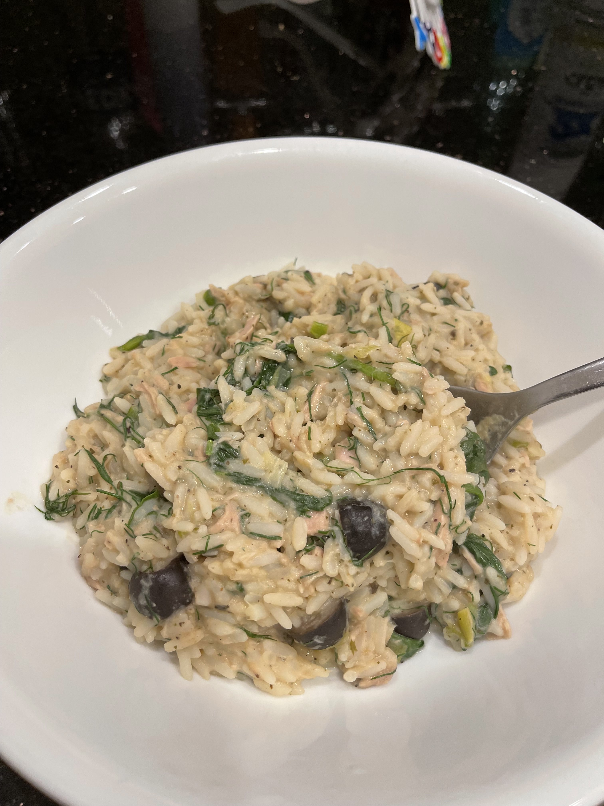

Back to Home
Aunty Celen's Olive Rice

Description
Ingredients
- 1 Medium Yellow Onion
- 1 Can of Sardines (preferably in Olive Oil) or 1 Can of Light Tuna in Oil
- 1.5 Cups of Parboiled Rice
- 3 Cups of Chicken Stock
- 1/2 Can of Black Olives
- 1/2 Cup of Hummus
- 2 Cups of Baby Spinach
- 1/4 of Chopped Fresh Dill
- Salt and Pepper to Taste
Steps
- Dice onions and saute on medium heat until translucent
- Drain sardines (or tuna) and add to pan. Saute and stir to break apart
- Add parboiled rice
- (Optional) Cook for 1 to 2 minutes to toast
- Add chicken stock, hummmus, and halved olives. Cover and bring to a boil, then reduce heat to a simmer
- Cook until rice is ready
- Stir in chopped spinach and fresh dill
- Add salt and pepper to taste